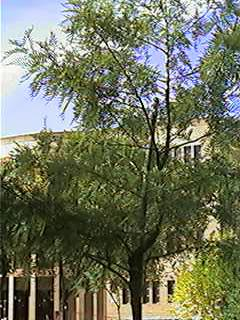

| Grevillea
robusta A. Cunn. ex R.
Br., Suppl.
Prodr. Fl. Nov. Holl. 24 (1830) |
Proteáceas |
| Roble australiano,
árbol del fuego, pino de oro |
Árbol
semicaducifolio |
|
Árbol semicaducifolio,
monoico, de 20 a 30 m;
su tronco
puede medir hasta 0,8 m de diámetro; corteza
fisurada con la
edad, formando
cordones, de color grisáceo.
Hojas simples,
alternas,
pecioladas; lámina de 15-25 x
8-12 cm, profundamente divididas (recordando al fronde
de un
helecho), con 11-13 segmentos primarios que pueden
estar más o
menos profundamente
lobados, glabros por el haz y cubiertos de pelos
blanquecinos
por el envés.
Inflorescencia en
racimo de 7-13 cm.
Fruto seco, de
tipo folículo, de
unos 2 cm, algo irregulares,
rematados en el estilo
persistente, generalmente con 2 semillas aplanadas,
de alrededor de 1 x
0.5 cm, de
color pardo, rodeadas por un ala papirácea.
|
 Foto: Carlos Romero Zarco, Nov. 2002 |
Fotos de detalles: |
Observaciones.-
El
nombre genérico está dedicado a un tal Greville; el epíteto
latino robusta alude a su corpulencia,
ya que otras
especies de
este género son arbustos o pequeñas matas postradas.
El árbol del
fuego es muy atractivo como ornamental por
su peculiar follaje que recuerda a las frondes de los
helechos, y por
sus
flores tan vistosas.
|
| Área de Origen.- Australia, donde le llaman "roble sedoso" por el tacto de su madera. En su hábitat natural suele crecer cerca de los arroyos o ríos, pero también en laderas expuestas y relativamente secas, por lo que se considera un árbol bastante resistente. | |
| Uso en el campus.- Como
árbol ornamental, sobre césped. Hay tres ejemplares
jóvenes en la zona central del Campus. |
Localización.- |
| Rocío Monsa Cascales & Carlos Romero Zarco (2003) | |